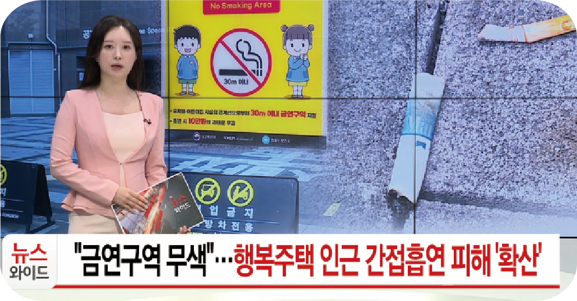
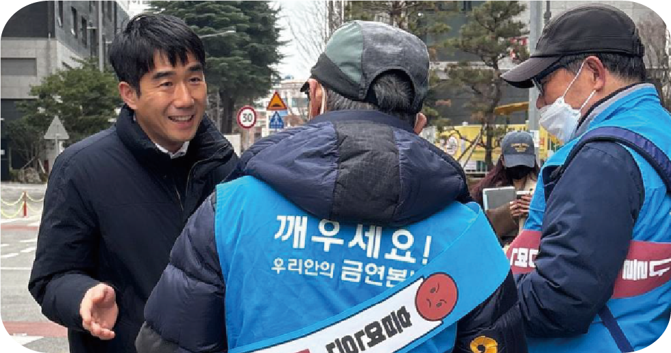
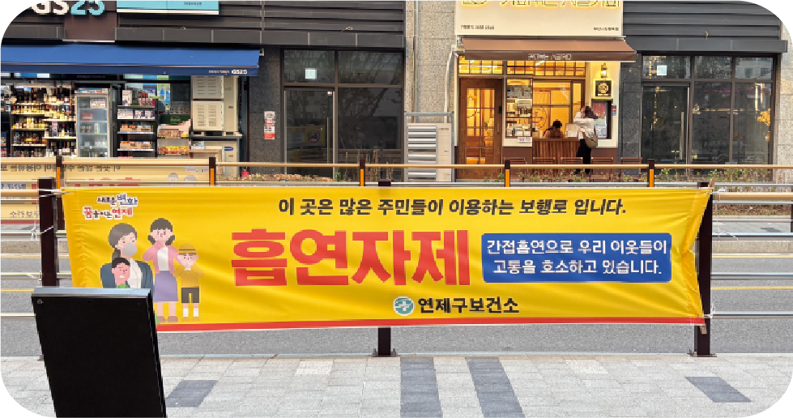
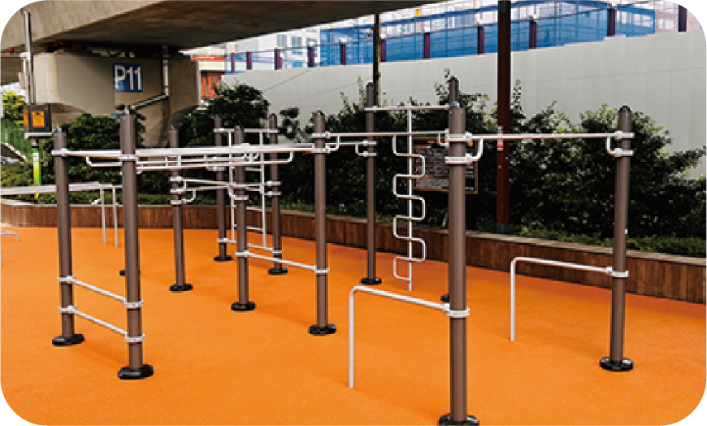
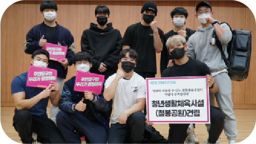
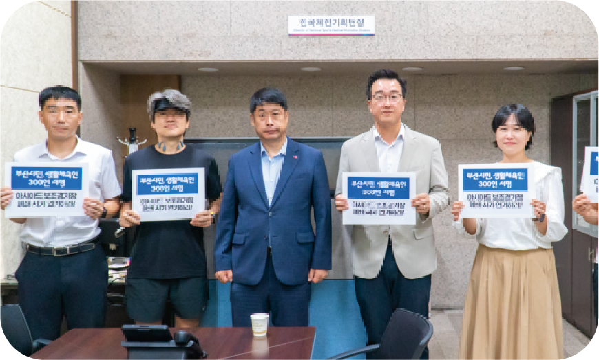
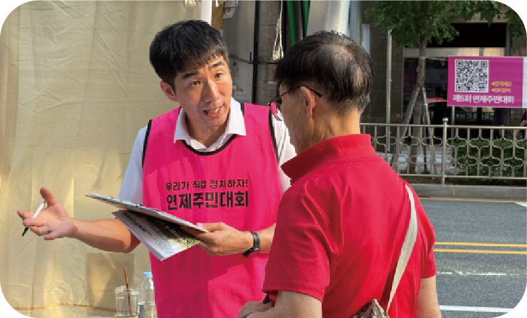
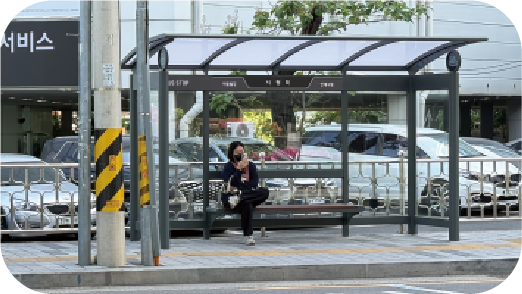
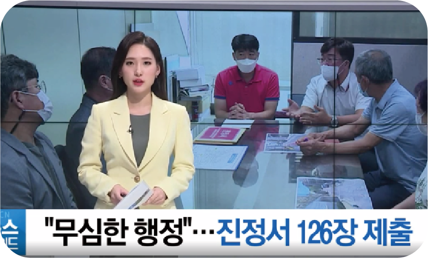
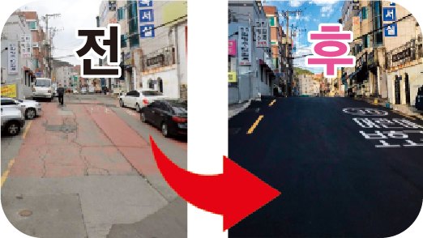

민원해결왕 홍기호
연일시장 채소집 아들, 서민의 삶과 고충을 잘 압니다. 고단했던 어머니의 하루를 기억하며, 연제주민들의 고충을 잘 해결하는 정치를 하겠습니다.
"어린이집 등·하원 시 담배 연기로 인해 아이들의 건강이 우려돼요."
연산2동 일대(비스타동원APT–시청앞행복주택APT 등)에서
어린이집·횡단보도 인근 길거리 흡연 문제를 해결하기 위해 주민
민원을 조직해 구의회와 보건소에 전달했습니다.
그 결과, 간접흡연 예방 어르신 홍보단이 배치되고
흡연 자제 현수막이 설치됐습니다.
* 금연구역 표시 강화는 연제구 보건소에 전달해 협의 중입니다.
* 흡연권 보장을 위한 스마트 흡연부스 설치도 추진하겠습니다.



청년 생활체육시설 <철봉공원> 조성 실현
예산이 없다는 벽 앞에서도, 청년들과 함께 서명운동을 하고 지자체를 설득해 참그린길과 온천천에 철봉 공원이 세워졌습니다.


부산시 아시아드보조경기장 폐쇄문제 해결
부산시가 전국체전 준비를 위한 아시아드 보조경기장 보수 공사과정에서 시민의견 수렴없이 조기 폐쇄를 통보했습니다. 주민들과 생활체육인 300여 명의 집단진정을 조직해 폐쇄 기간을 조정하여 문제를 해결했습니다.

마을버스 정류소 버스 대기시설 개선
마을버스 부산시청역 정류소는 이용객이 많은데 대기시설은 열악해 폭염이나 우천 시 주민들의 불편이 컸습니다. 주민 집단민원을 통해 대기시설이 추가로 건립 되었습니다.


연제구 위험한 보행로 다수 개선
"이 길 때문에 몇 번을 넘어졌는지...구청은 예산이 없다며 안 고쳐줘요" 울퉁불퉁한 인도에서 넘어지신 어르신의 눈물 섞인 목소리를 그냥 지나칠 수 없었습니다. 주민들과 집단 민원을 넣은 끝에 도로는 마침내 정비되었습니다.

